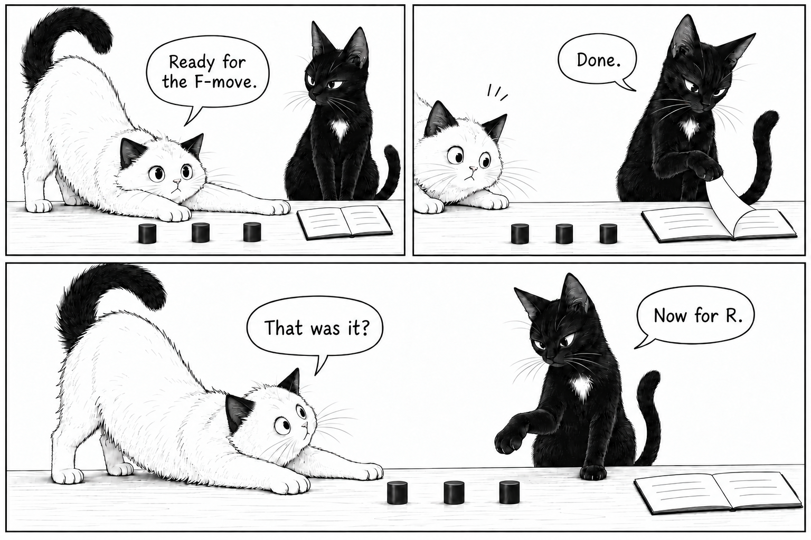

One state, two fusion bases
To calculate an exchange of two Fibonacci anyons, express the state in channels of definite total charge for that pair. Each channel acquires its own exchange phase. The difficulty is that a state with a definite charge for one pair need not have a definite charge for another. A change of fusion basis makes this relation explicit, much as recoupling three angular momenta changes the intermediate angular-momentum label.
Take three Fibonacci anyons of type \(\tau\), with fixed total charge \(\tau\). The rule \(\tau\times\tau=1+\tau\) permits two intermediate channels. Here \(1\) means vacuum topological charge, not one particle. The two association choices give orthonormal bases of the same two-dimensional space:
Write the coordinate vectors as \(c_L\) and \(c_R\), always in channel order \((1,\tau)\). In the real symmetric gauge used here,
This F-move changes coordinates. It does not move the anyons or apply a gate. Fusion trees specify a basis, not a history of measurements. See Trebst et al., §§2.3–2.4 for the fusion-space construction.

Read the dialogue
White cat: “Ready for the F-move.” Black cat: “Done.” White cat: “That was it?” Black cat: “Now for R.”
Why can the two pair-charge probabilities differ if the state is unchanged?
They refer to different pair-charge measurements. For the same physical observable, change its matrix along with the coordinates: \(O_R=FO_LF^\dagger\), so \(c_R^\dagger O_Rc_R=c_L^\dagger O_Lc_L\). The vacuum projector for pair 1–2 is \(\operatorname{diag}(1,0)\) in the left basis; the vacuum projector for pair 2–3 has that diagonal form in the right basis. Neither measurement is actually performed by the illustration.
Exchange positions 2 and 3
An exchange multiplies each definite pair-charge channel by its own phase. We use the right-handed Fibonacci convention of Bseiso et al., §II.1, Eqs. (2)–(3): positive exchange means counterclockwise, viewed from above the plane, with
The two mirror-image Fibonacci theories have opposite chirality. The one used here has topological twist \(T_\tau=e^{4\pi i/5}\), the phase associated with a \(2\pi\) self-rotation; its mirror has the complex conjugate. Separately, we choose counterclockwise as the positive exchange direction. Two exchanges in a definite channel \(c\) obey \((R_c)^2=T_c/T_\tau^2\), with \(T_1=1\). Thus a non-Abelian exchange has a channel-dependent phase; it is not simply the twist of a single anyon.
Here \(B_1\) exchanges positions 1–2 and \(B_2\) exchanges positions 2–3, both expressed in the left basis. Clockwise exchange uses the inverse. Opposite chirality conjugates all exchange phases. The two F-moves below only change representation; the central R step is the physical exchange.
Follow the calculation
Order, equality, and a measurement
The braid relation \(B_1B_2B_1=B_2B_1B_2\) does not say that neighbors commute. Compare short sequences below. The listed order is chronological: \([1,2]\) applies \(B_1\) first and has matrix \(B_2B_1\). A minus sign reverses the exchange direction.
| Quantity | Sequence A | Sequence B |
|---|---|---|
| Amplitude for channel 1 | ||
| Amplitude for channel τ | ||
| P(pair 1–2 → 1) | ||
| P(pair 2–3 → 1) |
A squared overlap below one distinguishes the output states even when one chosen measurement gives equal probabilities. The matrix residual compares the operators themselves, so the braid-relation check tests every input in this sector. Numerical residuals near machine precision verify the implementation; the group relation is exact.
Why learn this recoupling calculation?
The fusion-path count gives the same golden ratio: the number of allowed states grows asymptotically by the quantum dimension \(d_\tau=\varphi\) per added anyon. It does not assign a noninteger local Hilbert space to a particle.
Non-Abelian statistics alone does not guarantee universal gates. Ising braiding on its usual qubit encoding generates Clifford operations; Fibonacci braids can approximate arbitrary encoded unitary gates to any desired accuracy. This is an approximation statement, not exact synthesis by a finite word. The density result is due to Freedman, Larsen, and Wang; Hormozi et al. construct explicit compiling methods. Hormozi et al. assign the displayed numerical \(R\) to clockwise exchange; check orientation conventions before comparing braid words.
For a many-anyon Hamiltonian that favors a particular adjacent fusion channel, these same F-matrices convert local pair-charge projectors into a common many-body basis. That is why this recoupling calculation is useful beyond gate design: it builds the interaction matrices of an anyon chain. Feiguin et al.'s golden chain is a concrete example.
Prepared file: Download.